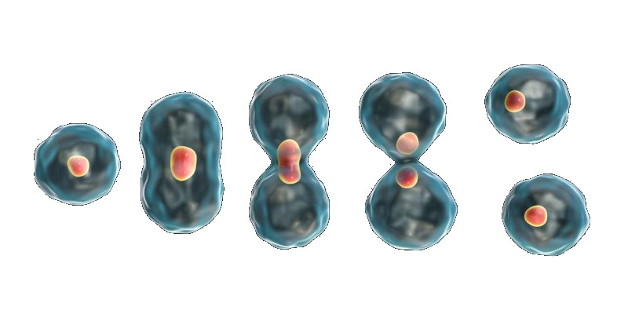

Una célula es capaz de realizar las tres funciones vitales: nutrición, relación y reproducción.
Función de nutrición (Figura ![[*]](crossref.png) )
)
- Consiguen nutrientes. Según la forma de obtener los nutrientes, la nutrición puede ser autótrofa o heterótrofa. Las células con nutrición autótrofa los fabrican con agua, dióxido de carbono y energía solar en un proceso llamado fotosíntesis. Las células con nutrición heterótrofa los obtienen de alimentos procedentes de otros seres vivos.
- Respiran. La mayoría de las células toman y utilizan el oxígeno del medio.
- Utilizan el alimento y el oxígeno. En su interior, las células utilizan los nutrientes y el oxígeno para crecer, para repararse y para obtener energía.
- Expulsan los desechos. Tras utilizar los nutrientes y el oxígeno, las células producen
sustancias de desecho que expulsan al exterior
a través de su membrana.
Figura:
Nutrición celular
|
|
Función de relación (Figura )
Las células son capaces de reaccionar a cambios que se producen dentro o fuera de ella. Algunas son capaces de moverse y desplazarse gracias a ciertas partes especializadas.
Figura:
Función de relación
|
|
Función de reproducción (Figura
Las células pueden formar células hija semejantes a ellas. Para ello, hacen una copia de su material genético y reparten su citoplasma en dos mitades. Material genético y citoplasma se separan y forman dos células.
Figura:
Función de reproducción
|

|